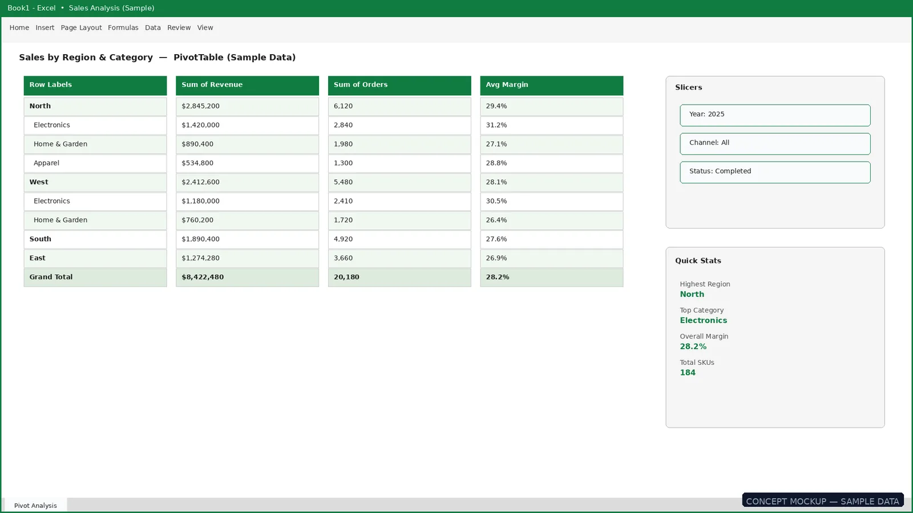
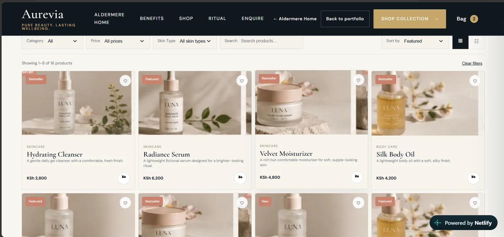
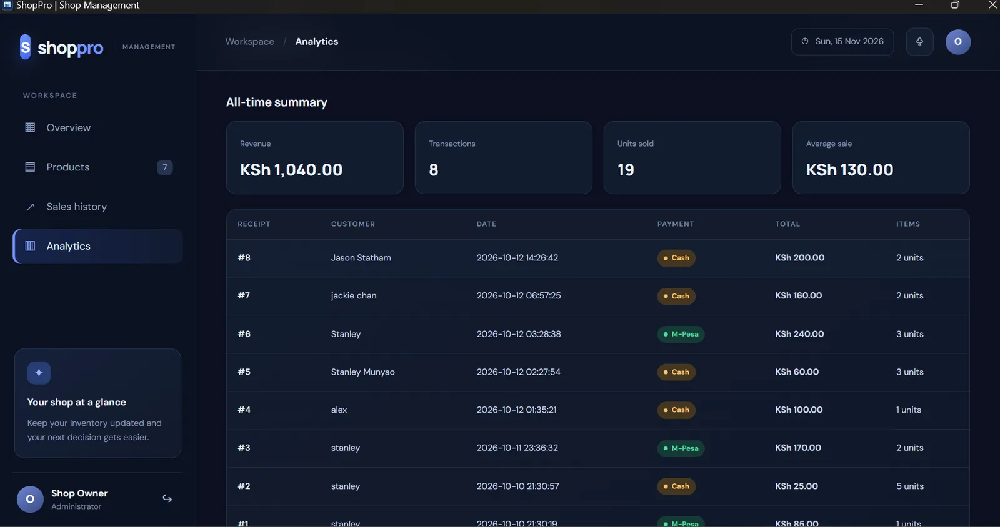
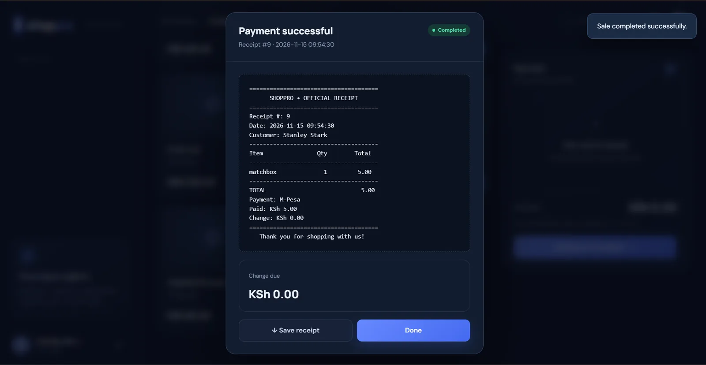
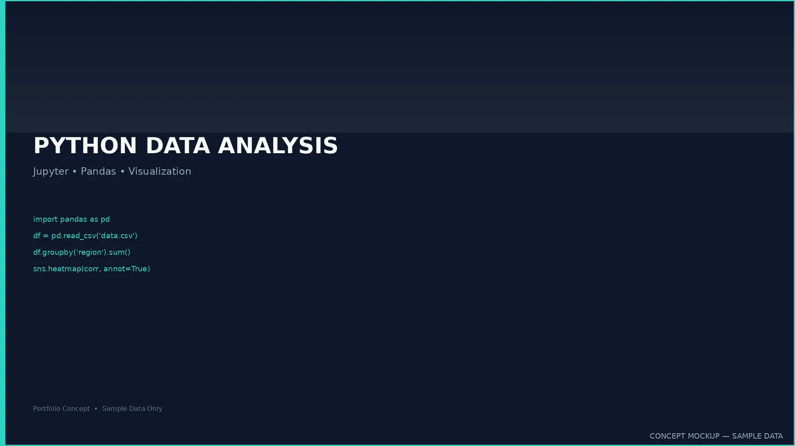
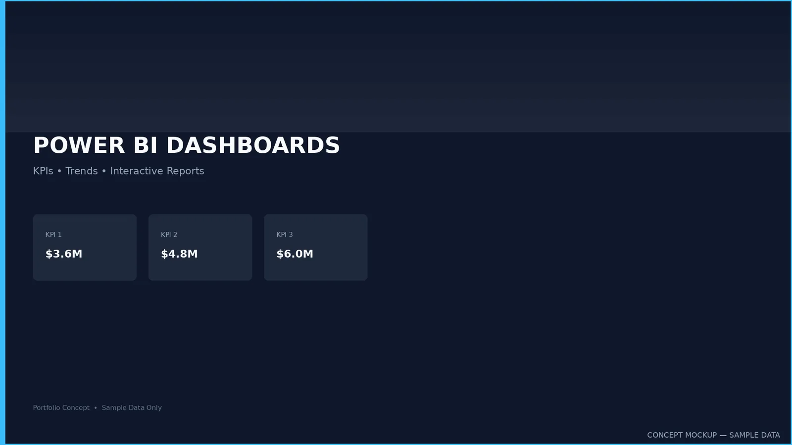
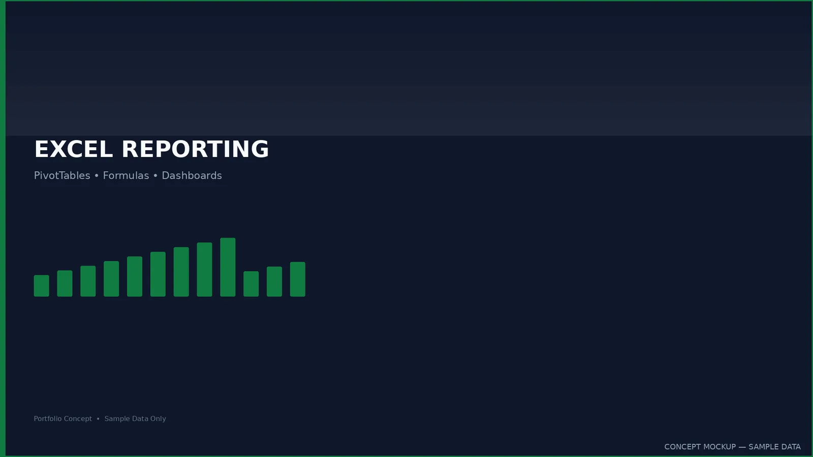

JAPRES Academy
Website, student portal and administrative tools for an education client.
Explore the case study ↓Client delivery, independent brand work, data analysis and projects in development. Each case study makes the project scope and current status clear.
My work spans a live education platform, an Excel analysis, independent brand and software projects, and this portfolio itself. The labels below distinguish client work, personal projects and concept visuals.
Website, student portal and administrative tools for an education client.
Explore the case study ↓800 Kenyan retail orders reviewed through data cleaning, measures and reporting.
Explore the case study ↓A self-directed analytics brand and web presentation concept.
Explore the case study ↓A shop management system project shown with test data.
Explore the case study ↓This portfolio website, built to present projects, services and writing.
Explore the case study ↓A public-facing school website supported by a student portal and administrative tools.
Project delivered & live


JAPRES Academy is an education website project that brings public-facing school information together with a private student portal. The live project is available for review.
The goal was to give the school a clearer online presence and provide a dedicated digital area for student-facing information and administrative workflows.
The screenshots show the public website, student portal and administrator dashboard. Personal details are concealed in the student portal image.
The JAPRES Academy website and student portal, open for review.
Need something similar for your school?
Discuss a similar education website ↗An 800-order Kenyan retail dataset analysed in Excel to organise performance measures and surface useful trends.
Excel analysis complete


The working dataset contains 800 retail orders with product, category, payment and city details for each order.
Recorded leading category: Electronics. Recorded leading city: Nairobi.
The Excel work focuses on organising the dataset before analysis: consistent column types, duplicate checks and prepared analysis sheets before summaries are created.
Project files for the documented Excel analysis.
Have data that needs this kind of structure?
Discuss a data analysis project ↗An independent brand and website concept developed as a personal project, not a client engagement.
Personal project


Aldermere Analytics is a personal brand and website concept exploring how an analytics-focused service can communicate clearly online.
This work is a personal project. It is not presented as an external client engagement or a claim of client results.
The website and store images are concept work. Aurevia is not an operating shop.
Open the Aldermere Analytics brand site.
A shop management system project demonstrating practical interface and workflow development.
In development



ShopPro Cloud is a software project in development. The available screens show a start page, sales records and a receipt view using test data.
Inventory controls, automated workflows, integrations and production use are not claimed by these screenshots.
A multi-page portfolio project presenting selected work, services, skills and journal content.
Personal website project
This website is an ongoing personal project designed to present my professional direction and document selected work. It includes dedicated pages for services, skills, about information, contact and a Sanity-powered journal structure.
The case studies above document selected projects. These additional screens are concept mockups using sample data. They are practice visuals, not client work or verified business results.
Sample screens exploring data cleaning, summaries and trends.


Additional practice visuals, labelled as concept mockups and sample data.



Tell me what you are trying to improve. We can discuss the scope, a suitable approach and whether I can help.
Start a conversationstanleymunyao42@gmail.com · Nairobi, Kenya